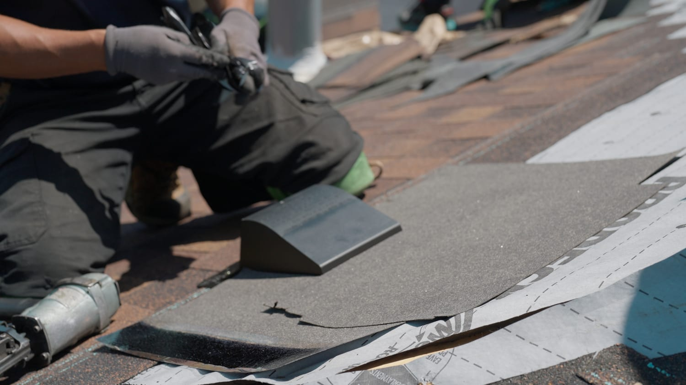

Most residential replacements here run $9,000 to $22,000. Rather than make you call to find that out, here's the range and exactly what decides where your roof lands in it.
$9,000–$22,000 for most residential replacements
Free, written, and measured — not a per-square-foot guess
Master Shingle Applicator · Master Craftsman · ShingleMaster Pro
Homeowners tell us the most frustrating part of getting a roof done is that nobody will give them a number. Unclear and unexpected costs are the single most common complaint about roofing contractors, ahead of poor communication and delays. So here is ours.
Most residential roof replacements in Kitchener-Waterloo fall between $9,000 and $22,000.
That's a genuine range, not a hedge. Roof size is only one input. A compact, single-storey, single-layer roof with a simple gable and good decking sits near the bottom. A large two-storey home with a steep cut-up roofline, two layers of old shingles to strip, several chimneys and skylights needing new flashing, and awkward equipment access sits near the top. Two houses on the same street with the same square footage can land $6,000 apart for reasons that have nothing to do with who's quoting.
What we won't do is give you a number for your roof from a web page. Anyone quoting a specific price without measuring is guessing, and a guess is exactly what turns into a revised invoice later.
| Factor | Effect | Why |
|---|---|---|
| Roof size | Largest single factor | Measured in squares (100 sq ft), not by the house's floor area — a bungalow's roof can be bigger than a two-storey's. |
| Pitch | Moderate to large | Steeper roofs need more fall protection and staging, and slow the crew down considerably. |
| Layers to remove | Moderate | Two or three layers means multiples of the tear-off labour and disposal weight of one. |
| Deck condition | Variable | The one thing nobody can price in advance. Rotted sheathing has to be replaced while it's exposed. |
| Roof complexity | Often underestimated | Every valley, dormer, hip, chimney and skylight is a flashing detail. Complexity costs more than area. |
| Ventilation | Small to moderate | If intake and exhaust are wrong, correcting them is part of doing the job properly — and it's the cheapest it will ever be. |
| Access & staging | Small to moderate | Long or steep drives, tight lots and mature trees close to the house can mean conveyor or crane staging. |
| Shingle line | Moderate | CertainTeed Landmark architectural is our standard; upgrades and colour choices move the material cost. |
This is general information about typical costs in our market. It is not an estimate or a quote for any specific property — your actual price comes from measuring your roof and looking at what's on it.
Every vent, valley and roof-to-wall junction on this roof is a detail that has to be measured and flashed — which is why we measure rather than multiply square footage.
If you've been researching online you've probably seen figures well below $9,000 — some directories quote Kitchener replacements as low as $3,000. Those aren't necessarily wrong; they're usually describing different work. The common reasons a number lands lower:
A cheaper quote isn't dishonest. But two numbers are only comparable if they cover the same scope, so it's worth asking which of the items above is in or out of each one.
This is the part that costs real money later. CertainTeed's own installation specification states that a lay-over or roof-over installation does not qualify for extended warranty coverage. The top warranty tier also requires all metal flashings to be replaced, which an overlay by definition doesn't do.
So if a quote offers you a "new roof" over the existing one and a long manufacturer warranty, those two things are in conflict. That's the single most useful question you can ask any roofer you're considering.
When we quote a replacement, all of this is in the price:

We measure the roof — every facet, valley and flashing run — look at the decking and ventilation, check access and staging, and give you a specific figure in writing. Not a range that moves, and not a per-square-foot multiplication.
The one honest unknown is the decking, because nobody can see it until the old roof is off. If we find rot, we photograph it, show you, and agree the cost with you before replacing it. You won't find it on the invoice as a surprise.
Most residential roof replacements in the Kitchener-Waterloo area fall between $9,000 and $22,000. That's a wide band because roof size is only one of the factors — pitch, the number of layers coming off, the condition of the decking underneath, how many valleys and chimneys and skylights need new flashing, equipment access, and the shingle line you choose all move the number. A small, simple, single-layer bungalow roof sits near the bottom of that range. A large two-storey home with a steep cut-up roofline, two layers to remove and multiple penetrations sits near the top.
Usually because they're pricing less work, not the same work cheaper. The common differences are an overlay instead of a full tear-off, reusing existing metal flashings rather than replacing them, skipping ice-and-water membrane at the eaves, leaving ventilation as-is, or excluding disposal. Some published figures online also cover partial work or reflect older pricing. None of that makes a lower quote dishonest — but you should know which of those items is in or out before you compare two numbers.
Full tear-off to the deck and disposal of everything that comes off, inspection of the decking with any rotted sheathing replaced, ice-and-water protection at the eaves and in the valleys, new underlayment across the deck, all new metal flashing at every wall, chimney, skylight and valley, code-compliant intake and exhaust ventilation, and new CertainTeed shingles with matching starter and hip-and-ridge, installed to manufacturer specification. A free written estimate up front and a leak-free guarantee on the finished work.
Our written estimate is the number. The one genuine unknown on any roof is the condition of the decking, because nobody can see it until the old roof is off. If we find rotted sheathing we photograph it, show you, and agree the additional cost with you before we replace it — we don't discover it and add it to the invoice afterward. Everything else is measured before we quote.
No. Estimates and inspections are free with no obligation. We measure the roof, look at the decking, flashing, ventilation and any problem areas, and give you a written number. If a repair is the right answer instead of a replacement, we'll tell you that.
It is when the extra cost buys things that determine how long the roof lasts. Full tear-off, new flashings and correct ventilation are the difference between a roof that reaches its rated life and one that leaks early at a joint. There's also a warranty consequence: CertainTeed's own installation specification states that a lay-over or roof-over installation does not qualify for extended warranty coverage. If price is the only difference between two quotes, ask what each one leaves out.
The full scope of a proper replacement, and why we won't roof over existing shingles.
GuideStraight answers on how to tell which one your roof actually needs.
Get StartedTell us about your property and we'll follow up as quickly as possible.
Free, written, measured. Serving Kitchener, Waterloo, Cambridge, Elmira, Guelph, and surrounding areas.